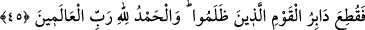

45. Böylece zulmeden toplumun kökü kesildi. Hamd, âlemlerin Rabbi Allah’a
mahsustur.
“Böylece zulmeden milletin ardı kesildi.” Öyle ki onlardan hiçbiri kalmadı.
Beğavi der ki: Azab ile onların kökü kazındı, onlardan geriye kimse kalmadı. Burada
hükmün illetini hissettirmek için zamir yerine açıkça “zulmeden millet” ifadesi
kullanılmıştır. Çünkü onların helak edilmeleri zulümleri sebebiyledir. Şükredecekleri
yerde nankörlük etmişler, tâatlerin yerine masiyetleri ikame etmişlerdir.
Onları helak ettiği için “alemlerin Rabbi olan Allah’a hamdolsun.” Çünkü kafirlerin
ve âsîlerin helak edilmesi, onların bozuk inançlarının ve pis amellerinin
uğursuzluğundan yeryüzü ehli için bir kurtuluş olmuştur. Bu, hamdi gerektiren büyük bir
nimettir. Özellikle bunda, peygamberlerin getirdikleri i’la-i kelimetullah sözkonusudur.
Âyette işaret edilen bazı hususlar vardır:
1. İster ihtiyârî olsun, ister mecburî olsun her işte müracaat edilecek yalnız Allah
Teâlâdır. Akıl sahibi, Allah’dan başkasına iltica etmez. Çünkü masivaullah, Allah’tan
gayri şeyler aletler ve sebeplerdir. Hakikatta müessir, sadece Allah Teâlâdır. Mü’mine
gereken onun kapısını gözlemek, sıkıntı ve rahat hallerinde sadece ondan yardım ve
istimdad dilemektir. Kafir ise böyle değildir. O sadece darlık zamanında gözlerini
Allah’a açar. Halbuki makbul olan kendi istek ve ihtiyarı ile Allah’a dönmektir. Çünkü
itâatkar kul, bütün hallerinde efendisinin kapısını terketmez, kulluktan ayrılmaz.
2. Allah Teâlâ, bazan insanın hâlini sıkıntı ve darlıktan rahat ve huzura, çeşit çeşit
nimet ve ihsanlara çevirir. Bazan da tersini yapar. Nitekim şefkatli bir baba oğluna
bazan sert, bazan yumuşak davranır. Bütün bunlar onun ıslahı, delilin yerine gelmesi ve
illeti ortadan kaldırmak içindir. Bu muamelede onu terbiye, dini ve dünyası konusunda
firasetli olması için büyük bir faide vardır.
Saib der ki:
Senin sert mizacına törpü tesir etmez.
Her ne kadar zamanın iniş ve çıkışları törpü gibi olsa.
3. Helak, istidraca göredir. Böyle hoş olmayan şeylerden Allah’a sığınırız. Hadiste
buyrulmuştur ki: “Allah Teâlâ’nın dünyada masiyet üzere olduğu halde bir kula
istediğini verdiğini görürsen bil ki bu, o kul için bir istidracdır. Sonra Peygamber (s.a.)
şu âyeti okudu “Kendilerine yapılan uyarıları unutunca…” (el-En’âm, 6/44)[101]
Te’vîlatü’n-Necmiyye’de der ki:
“Üzerlerine her şeyin kapılarını açtık.” Yani, ehl-i zâhir için mal, mevki, kabul,
sıhhat ve benzeri zahiri nimetler vererek nimet suretinde belalar (imtihanlar) açtık. Ehl-i
batın için gayb fütuhatı, âyetler gösterme, kerametler zuhur etmesi, nurların görünmesi,
sırların keşfi, havâtırı gözleme, vakitleri muhafaza, ruhaniyeti müşahede ve bunlar gibi